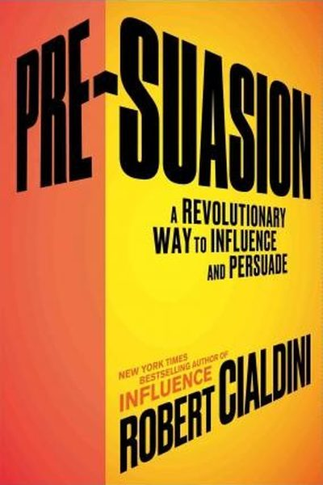

Library › Power & Strategy
Pre-Suasion — Summary & Key Lessons

A revolutionary way to influence and persuade — the science of what you do BEFORE you say a word.
📖 OPEN THE FULL INTERACTIVE BREAKDOWN →🌐 Read it in Hindi, Hinglish, Gujarati, Tamil & 22 more languages — free, with audio.
💡 The Big Idea
Cialdini — the author of Influence, the most-cited persuasion book in the world — discovered that the secret of the most effective persuaders isn't in their message at all: it's in what they do BEFORE the message. Pre-suasion is the art of arranging for recipients to be receptive to a message before they encounter it — by drawing their attention to a particular concept (the 'privileged moment') that makes your argument feel obvious. Open a door with the right frame, and the request walks through by itself.
🧠 The 6 Key Lessons
Lesson 1: The Privileged Moment
Pre-Suasion
Cialdini's core discovery: the most powerful persuaders succeed by arranging for their audience to be receptive BEFORE the message — creating a 'privileged moment' where attention is focused on an idea that makes the coming request feel natural. Change what people are thinking about when they meet your message, and you change what they do with it.
📖 Example: In a study Cialdini ran, shoppers shown images of soft clouds (linked to comfort) before buying a sofa were willing to pay significantly more — not because clouds are persuasive, but because they primed 'comfort,' which made the sofa's comfort the whole story. Read the full example →
⚡ Do this: Before your next pitch, decide the ONE concept that would make your proposal feel obvious — then open with something that puts that concept in their head first.
Lesson 2: Attention Is the Currency — Focus It
Attention
Persuasion is a fight for attention, and attention is a limited resource with a strange property: what we focus on becomes important to us. Whatever you direct someone's attention toward — a feature, a risk, a value — becomes the lens through which they judge everything after. The pre-suader chooses the lens deliberately.
📖 Example: Cialdini's data: people who first focused on safety (not price) judged products by safety; those primed on price judged by price. In one study, car buyers shown 'safety' ads first then price info still chose based on safety. Read the full example →
⚡ Do this: What do you want your audience to judge you by? Open every interaction by focusing their attention on exactly that — before any details.
Lesson 3: The Six Levers: Reciprocity, Liking, Social Proof...
The Levers
Pre-suasion works through the six principles of influence — but applied BEFORE the request: give first (reciprocity), find genuine common ground first (liking), show others like them choosing first (social proof), frame consistency ('you've always cared about X'), appeal to authority (credentials up front), and use scarcity ('only this many left') as the frame. Each lever primes a different willingness.
📖 Example: Cialdini's famous waiter study: repeating the order back to diners ('absolutely, the salmon') — a small pre-emptive kindness — increased tips by over 70%. The giving happened before the request; the tip was already primed. Read the full example →
⚡ Do this: Pick ONE lever and use it as pre-suasion this week: give something real first, quote a similar customer first, or establish common ground before your ask.
Lesson 4: Environmental Cues: The Room Persuades
Environment
The physical environment is a pre-suader you rarely notice: images of libraries and books encourage analytical thinking; images of athletes encourage competition; cleanliness and order cue cooperation. Cialdini's studies show ceiling height, ambient scents and even the texture of the paper change decisions. The setting is part of the message.
📖 Example: Cialdini cites research where negotiators in rooms with a briefcase and suit jacket on the table behaved more competitively — while rooms with backpacks and sweatshirts produced cooperation. Furniture persuades. Read the full example →
⚡ Do this: Before your next important meeting or pitch, audit the room: what does it say? Remove cues that fight your message, add one that supports it.
Lesson 5: The Danger: Pre-Suasion Cuts Both Ways
Ethics
Pre-suasion is not mind control — it's the amplification of genuine merits: it works best when the message is true and the frame is honest. Cialdini is explicit about ethics: using the tools to mislead backfires and destroys trust, and the 'sleeper effect' eventually exposes the gap between frame and reality. Persuade to inform, not to deceive.
📖 Example: The book closes with the warning that every tactic has a dark twin: fabricating social proof or faking scarcity wins short-term gains and long-term ruin. The pre-suaders who last are the ones whose frames match their facts. Read the full example →
⚡ Do this: Before using any lever, ask: 'Is this true? Would I want this used on me?' If not, don't — the trust you'd lose costs more than the win.
Lesson 6: What You Do Before the Message Shapes How It Lands
Pre-Suasion: The Front-Loaded Moment
Cialdini's discovery: the moment before a message — the setup, the frame, the environment — determines how the message is received more than the message itself. By directing attention to a relevant idea beforehand, you prime the audience to accept what follows. The pre-suasive frame is often the whole battle.
📖 Example: In one experiment, people who first answered questions about warmth and comfort were then far more likely to choose a 'cozy' product when offered — the earlier questions had silently primed the relevant value. The frame set before the pitch did the persuading. Read the full example →
⚡ Do this: Before your next important request or pitch, spend one minute priming the value most relevant to it — in the conversation, the email subject, or the room.
✅ 5-Step Action Plan
- Identify the privileged moment in your next pitch — the frame that makes it obvious.
- Choose the lens: what do you want them to judge you by? Focus attention there first.
- Run one reciprocity pre-move (give first) this week.
- Audit your meeting room's cues — remove the wrong ones.
- Use every lever honestly: frame must match facts.
⚠️ When This Doesn't Work
Cialdini's 'win before you pitch' is the most powerful persuasion book of the decade — and Gitanjali Gems is its darkest proof: Nirav Modi and Mehul Choksi pre-suaded brilliantly — the right gifts to the right bankers, the right framing of trust, the right associations with fame — and the pre-suasion opened doors that the fraud walked through for a decade, ₹14,000 crore of it. The book teaches you to set the frame before the message; it cannot teach you to verify the message after the frame is set. That verification is the one skill the book's villains never had.
💀 The Graveyard Proves It
💍 Gitanjali Gems — The Other Uncle in the PNB Fraud. Burn: Part of the ₹14,000 crore PNB hole. Read the full case study →
💬 Best Quotes from Pre-Suasion
- “The best persuaders become the best pre-suaders.”
- “What we present first changes the way people experience what we present next.”
- “Attention is the most valuable currency in the persuasive arena.”
Interactive version: mark lessons as read, listen in your language, share quote cards.